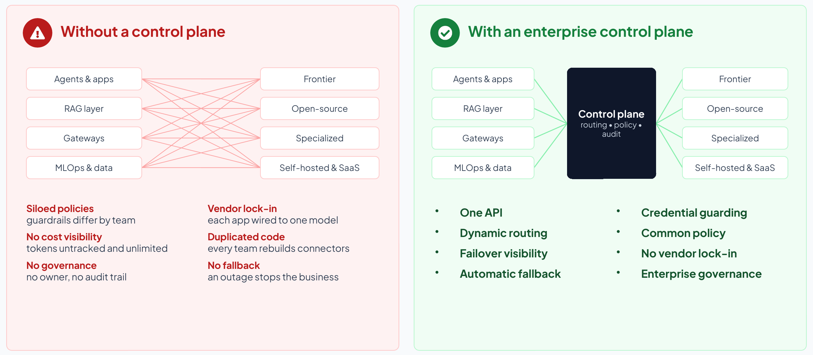

Section 1
Why intelligence orchestration is the next infrastructure advantage
What agentic AI asks of infrastructure
For two decades, infrastructure strategy was about hosting, meaning where applications run, how data is stored and how transactions scale. Agentic AI adds the problem of coordinating all of it. Enterprises now choose among dozens of frontier, open-source and derivative models, deploy agents inside packaged applications and on hyperscaler platforms, and increasingly let those agents act on systems of record. Choosing, routing and managing models over their life cycle therefore has to become an ongoing operational discipline instead of a one-time technical choice.3
Agents also behave differently from the chat assistants that preceded them. Instead of one question and one answer, an agent plans, calls tools, consults other agents and retries, generating thousands of small, context-heavy calls across models and systems. The Forbes article3, a Nutanix-sponsored piece from July 2026, describes the consequences: unpredictable token costs, multi-tenant governance problems, data-locality bottlenecks and demanding day-two operations. It concludes that AI should be treated as an enterprise platform with a centralized control plane instead of a string of projects.
Getting orchestration right is worth a measurable premium. Deloitte’s 2026 technology predictions put the autonomous AI agent market at about US$8.5 billion in 2026 and US$35 billion by 2030, and estimate that better orchestration and risk management could lift the 2030 figure by 15% to 30%, to as much as US$45 billion. The same research found that 80% of organizations consider their basic automation mature, but only 28% say so once AI agents are included.4
Agents are outrunning integration and governance
The 2026 Connectivity Benchmark, a survey of 1,050 IT leaders published by Salesforce and MuleSoft, quantifies the gap:2,5
- 96% say AI agent success depends on integration across systems.
- Organizations use an average of 12 agents today, a number projected to rise 67% within two years.
- 50% of agents operate in isolated silos rather than as part of a multi-agent system.
- 86% agree that without proper integration agents add complexity rather than value, and 82% name data integration as one of their biggest AI challenges.
- 68% find it hard to keep pace with emerging agent standards and protocols.
The cost of getting this wrong shows up in analyst forecasts. Gartner expects more than 40% of agentic AI projects to be canceled by the end of 2027 because of escalating costs, unclear business value or inadequate risk controls.6 Each of those causes is something a control plane exists to manage.
Independent surveys from 2026 point the same way, though each measures something different:
- Deloitte’s State of AI in the Enterprise 2026 (3,235 business and IT leaders in 24 countries, surveyed in August and September 2025): close to three-quarters of companies plan to deploy agentic AI within two years, but only 21% of them report a mature model for agent governance.7
- KPMG’s AI Quarterly Pulse for the third quarter of 2026 (314 US leaders at companies with revenue of $1 billion or more): 62% of organizations are building, deploying or developing AI agents, and 49% have set boundaries where agents may not make decisions on their own.8
- Microsoft’s Cyber Pulse report (February 2026): by Microsoft’s own telemetry, more than 80% of Fortune 500 companies use active AI agents built with low-code or no-code tools, and a survey it commissioned of more than 1,700 data security professionals found that 29% of employees have turned to unsanctioned AI agents for work tasks.9
- BCG’s The Widening AI Value Gap (September 2025): only 5% of companies are “future-built” for AI while 60% report hardly any material value, and AI agents’ share of the value AI creates is expected to rise from about 17% in 2025 to 29% by 2028.10
The surveys define adoption differently, from plans to active use, so each should be read on its own terms. Taken together, they show agents spreading faster than the governance around them.
The case against optimizing for one future
Two open questions are likely to shape the next five years. One is whether platforms become more concentrated or more federated, and the other is whether interfaces stay human-mediated or become agent-mediated.1 Industry leaders disagree about the answers. One banking executive expects a handful of hyperscalers and AI platform providers to dominate the control plane, a defense technology executive expects sovereign AI to need separate environments with data pinned to a country, and a pharmaceutical architecture leader cautions that multi-cloud pays only when there is a strong operational or resilience reason for it.1
No single end state is assured, so infrastructure and governance that can adapt are worth more than a design optimized for one forecast. The table below gives each of the four combinations a short name.
| Scenario (illustrative) | What it looks like | What the control plane must do |
|---|---|---|
| Hyperscaler-led control | Concentrated platforms, agent-mediated interfaces: a few hyperscalers and AI platforms run the control plane. | Keep identity, policy and audit portable so providers can be switched. |
| Open agent ecosystems | Federated platforms, agent-mediated interfaces: agents from many vendors transact through open protocols. | Register and govern third-party agents. Enforce trust and cost at the boundary. |
| Suite-centric enterprise | Concentrated platforms, human-mediated interfaces: AI is embedded in a few large SaaS suites. | Normalize policy across embedded agents instead of governing suite by suite. |
| Constraint-anchored estates | Federated platforms, human-mediated interfaces: sovereignty, latency or resilience keeps execution distributed. | Apply central policy with local enforcement, including private and edge deployment. |
The safest hedge against market uncertainty is to build a vendor-neutral control plane. This strategy rests on swappable models, unified cross-vendor governance, services decoupled from specific channels, and continuous verification for people and software agents alike.
